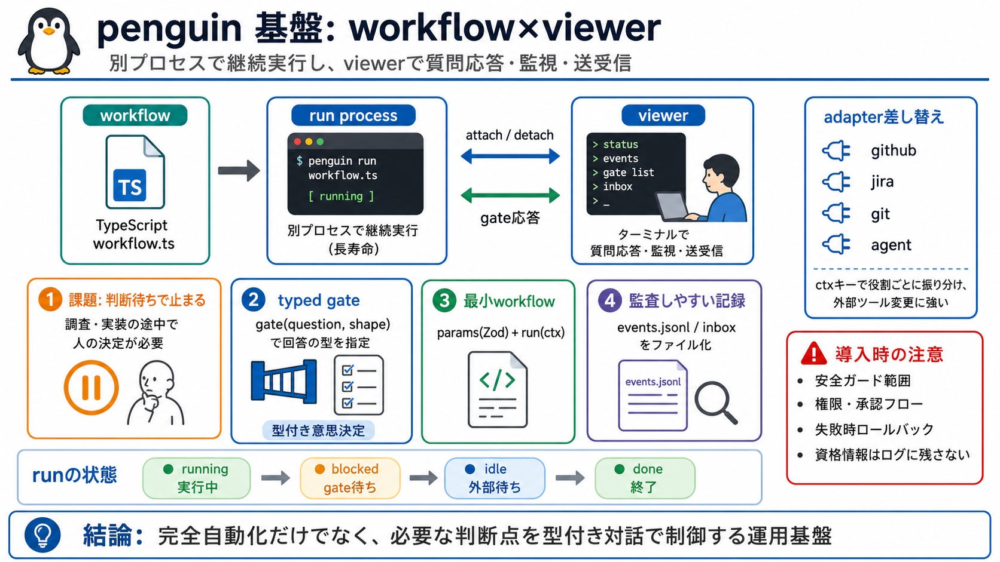

課題(EN)
Stuck without a decision point

TypeScript製の workflow を“別プロセス”として継続実行し、ターミナルのviewerで質問応答・監視・メッセージ送受信を行うリポジトリ向け基盤です。
開発作業は完全自動化しきれず、調査・実装の途中で人が決める場面が残ります（現場の“手戻り”と“確認待ち”問題）。
penguinは対話を“人の自由回答”ではなく、gate(question, shape) で 回答の型を要求して、判断点を型付きにします（EN: typed decision）。
workflowは“最小単位”で、params（Zodスキーマ）と run(ctx) で完結します（EN: minimal workflow contract）。
実行はターミナル上の“ライブプロセス”として継続し、viewerは attach/detach 可能です。長時間作業でも必要なタイミングで介入できます。
runは running / blocked / idle / done の状態で推移します。停止点が見えるので運用しやすい設計です。
adapterは役割（例: github/jira/git/agent）ごとに機能を提供し、ctxキーで振り分けます。外部ツール変更に強い（EN: pluggable adapters）。
runの状態（例: events.jsonl や inbox 等）はファイルとして残り、他プログラムからもテーリングできます。運用・デバッグの足場になります。
workflow/skillsはホーム側とリポジトリ側の2階層で扱い、skillsは sync-skills によりシンボリックリンクで同期されます。
penguinは完全自動化だけでなく、必要局面でgateにより人の意思決定を挟む設計です。対話型運用で現実の手順を回しやすくします。
README相当の情報だけでは、安全ガードの範囲（破壊的操作の抑止/確認レイヤ）や、失敗時ロールバック、そして権限モデル（誰が何を許可するか）が断定できません。
強みは、TypeScript workflow + Zod params + typed gate + adapter差し替え + 実行状態のファイル化で、対話型に運用できる点です（EN: operationally auditable workflows）。一方、チーム導入では安全性・権限・監査を別途設計してから適用するのが安全です。
No references found